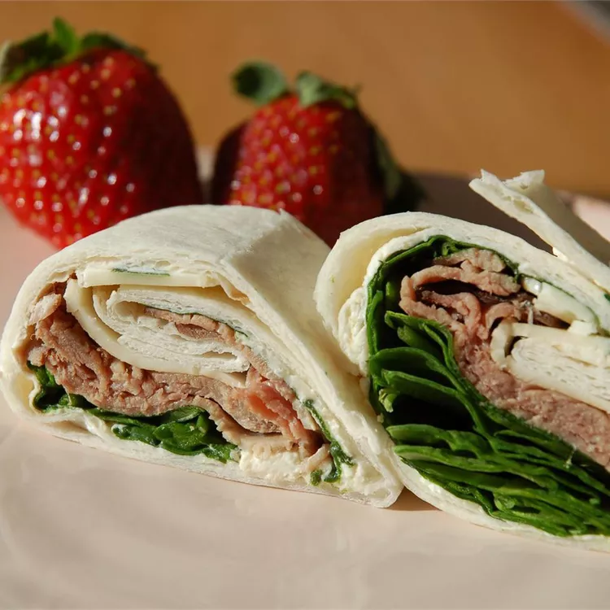

I make a batch of these roll-ups on Sunday and give them to the hubby and kids
in their lunches throughout the week. They are also great to put out for parties!
Roast Beef Horseradish Roll-Ups

Prep Time: 20 mins |
Additional Time: 4hrs |
Total Time:4 hrs 20 mins |
|
Servings: 12 |
Yield: 12 Servings |
- 2 (8 ounce) packages fat-free cream cheese, softened
- 3 ½ tablespoons prepared horseradish
- 3 tablespoons Dijon-style mustard
- 12 (12 inch) flour tortillas
- 30 spinach leaves, washed with stems removed
- 1 ½ pounds thinly sliced cooked deli roast beef
- 8 ounces shredded Cheddar cheese
Step 1
Beat the cream cheese, horseradish, and mustard together in a bowl until well blended.
Step 2
Spread a thin layer of the cream cheese mixture over each tortilla. Arrange spinach leaves evenly over the tortillas.
Place two slices of roast beef over the cream cheese. Sprinkle with Cheddar cheese, dividing evenly between tortillas.
Starting at one end, gently roll up each tortilla into a tight tube. Wrap with aluminum foil or plastic wrap to keep the rolls tight.
Refrigerate at least 4 hours.
Step 3
To serve for lunch, unwrap and slice into 2 or 3 pieces. Only cut the rolls you will be using that day so the others do not dry out.
To serve for parties, unwrap and slice the rolls diagonally into 1 inch sections, and arrange on a serving platter.
Nutrition Facts
per serving
| 551 | 17g | 64g | 32g |
| Calories | Fat | Carbs | Protein |